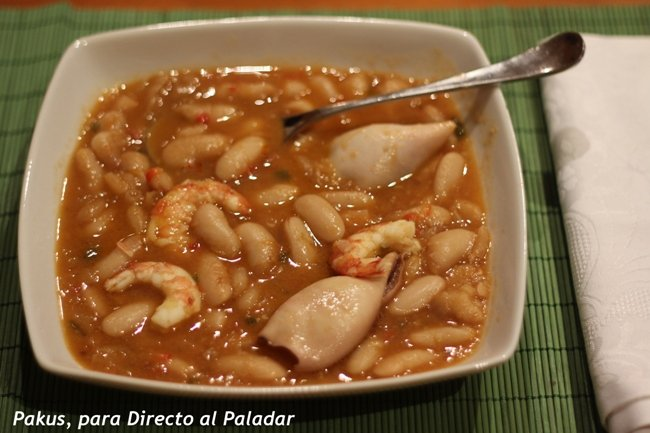

- Artículo de un blog donde nos relatan el viaje que hicieron a la ciudad perdida de Petra (Jordania).
- Entrada de blog donde nos cuentan cómo cocinas unas fabes a fuego lento con chipirones.
- Artículo publicado ayer en un blog de el periódico El País.
- Comunidad de noticias y artículos de opinión Meneame.
- Central de blogs en español: bitacoras.com
- Buscador de Google específico para blogs.
- Comunidad de fotografía Flickr.
- Si os pidiera que me buscárais información en la web sobre las "nuevas siete maravillas del mundo moderno". ¿Sabríais hacerlo?
- Si os pido ahora que me busquéis una foto a buena resolución de alguna de esas maravillas, sabríais guardarla en la carpeta "Mis documentos"?
- Finalmente, ¿sabríais enviarme esa foto a mi dirección de correo? (vrubert @ uji.es)
1. Navegación por páginas de blogs
Vamos a empezar la práctica navegando por algunas páginas webs de blogs en lengua hispana, y buscaremos información que nos interese a través de ellos.
2. Búsqueda de documentación/imágenes en la web.